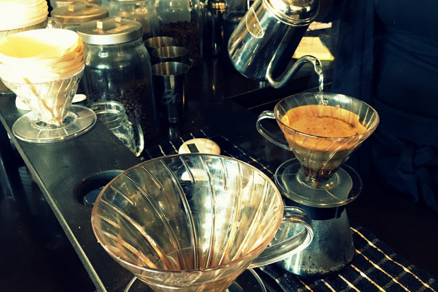

Hand Drip Coffee
HAND DRIP MEANS MAKING COFFEE USING KETTLE AND HOT WATER BY HAND. TO MAKE GOOD COFFEE, IT IS IMPORTANT TO HAVE AN EXCELLENT COMMAND OF SUCH A DIFFICULT TECHNIQUE.
HAND DRIP HAS ALWAYS BEEN OF THE MOST POPULAR METHODS OF MAKING COFFEE IN ASIAN COUNTRIES LIKE KOREA AND JAPAN. HOWEVER, IT IS INTRODUCED TO AMERICA A FEW YEARS AGO.
ONLY THE BEST BEANS ARE HAND-SELECTED AND ROASTED AT COFFEE TOMO. WE OFFER CUSTOMERS THE OPPORTUNITY TO SELECT THEIR BEANS AND PERSONALLY GROUND THEM.
WE USE VARIOUS TYPES OF DRIPPERS SUCH AS KALITA, KONO, AND HARIO. WE PERFECTED OUR HAND DRIP SKILLS TO CREATE THE BEST COFFEE FOR OUR CUSTOMERS.
HAND DRIP COFFEE IS DIFFERENT FROM MACHINE BREW DRIP COFFEE. OUR SKILLED BARISTAS CAN CONTROL THE TASTE OF THE COFFEE AS WELL AS CUSTOMIZE THE ORDER TO MEET EVERY CUSTOMER’S TASTES.